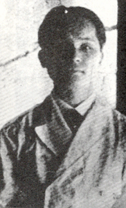
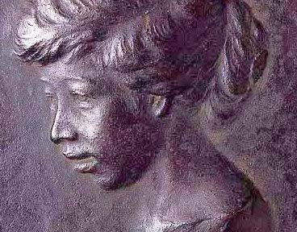
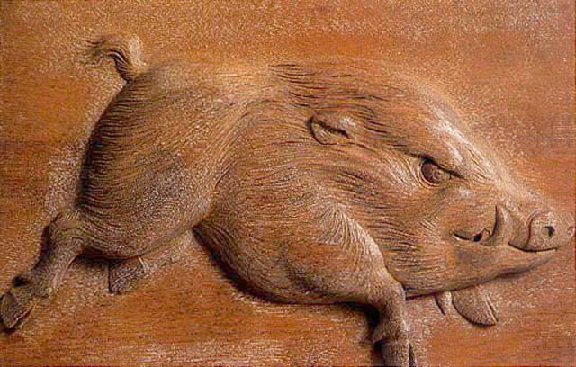

用
台灣的藝術
探索世界
Explore the World
with
Taiwan Artists & Their Friends
黃土水
台灣 (1895 - 1930)

雕刻奇才
黃土水是台北人，幼年喪父，並因為投靠木匠哥哥而受到兄長影響，發展出對美術與雕刻的興趣。師範學校畢業之後，他受師長推薦前往東京美術學校深造，不僅是該校的首位台籍學生，也是台灣旅日學習美術的第一人，並於日本順利求學於名師而功力倍增。
榮登帝展
相較於陳澄波是第一位入選帝展的台灣畫家，黃土水則是雕刻界第一位入選帝展的台灣人。黃土水的努力成功並非偶然，其後他連續三年入選帝展，作品中深刻流露濃厚台灣味。


藝術的福爾摩沙之美
我們常說藝術無國界，但對黃土水而言，他仍在創作中不斷展現那份對故鄉台灣的思念。在當時不少日本人認為台灣落後的年代，他用言語和作品向日本人說明，台灣的美麗。他希望藉由自己的努力，讓更多年輕人一起為台灣藝術努力，並且讓台灣的精神文明和文化更上層樓。黃土水始終堅信，台灣未來一定會出偉大藝術家，開創藝術的福爾摩沙時代。他期許自己透過不朽的藝術，為台灣留下點什麼，那些我們至今仍在欣賞、傳唱、讚嘆的美麗事物。